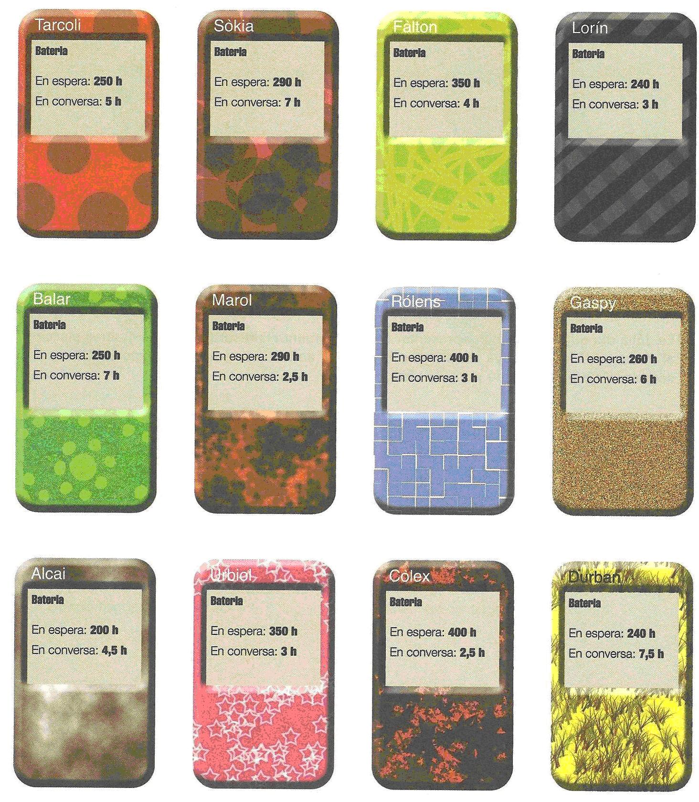
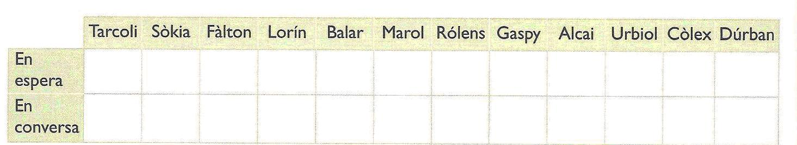
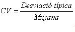
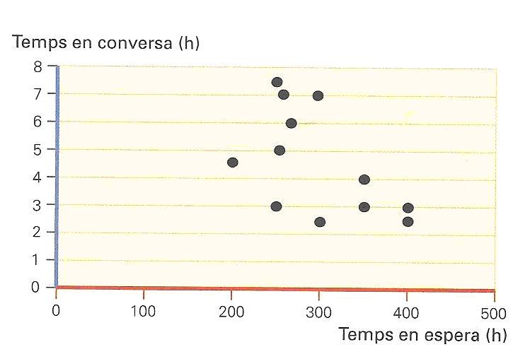

Activitat sobre Estadística
|
Activitat 1. Estadística
|
Aquestes
són les especificacios tècniques d’alguns telèfons mòbils (els noms de les
marques són ficticis, però les dades són reals):

- La
Carme té un
mòbil Rolens. Fa 72 hores que ha carregat el mòbil, i des d’aleshores no
ha parlat per telèfon. Si sempre ha estat carregant, quantes hores de
bateria en conversa li quedaran?
- Anota en aquesta taula l’autonomia en
espera i en conversa de cada un dels mòbils:

- Calcula la mitjana del temps de bateria en
espera i de bateria en conversa de tots els mòbils.
- Calcula la desviació típica del temps de
bateria en espera i del temps de bateria en conversa.
- Per saber en quin dels casos la dispersió
de les dades és més gran proporcionalment, hem de calcular el coeficient
de variació (CV):

Calcula
el coeficient de variació de l’autonomia en espera i de l’autonomia en
conversa. En quin cas les dades són més disperses?
- El gràfic mostra el temps en conversa i en
espera de cada mòbil:

La
correlació determina la relació o dependència que existeix entre dues
variables.
A la
vista del gràfic, pots dir que hi ha una correlació entre el temps d’espera i
el temps de conversa? Per què?
7.
Marca en el gràfic la posició que ocuparia un hipotètic mòbil que tingués com
a temps en espera la mitjana de tots els mòbils per a aquest valor, i com a
temps en conversa la mitjana de tots els mòbils per a aquest valor. Quins só
els tres mòbils que es troben més a prop d’aquest valor?
|
|
Font:
Matemàtiques. Destreses bàsiques. Resolució de problemes 3. Editorial
Cruïlla (modificat)
|
|